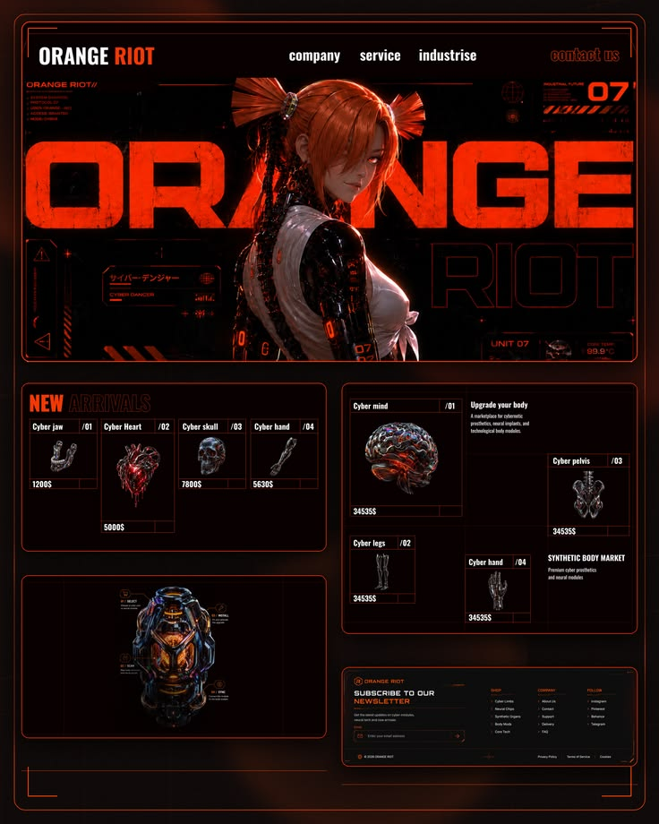

03 / CONCEPT STUDY
SIGNAL / NOISE.
A systems-forward concept study about translating complex feature logic into readable, actionable player feedback.

/ THE INTENTIONMAKE THE
MAKE THE
COMPLEX CLEAR.
Signal / Noise explores how interface, feedback, and system language can help a player understand a complicated game without flattening its depth.
The work is grounded in a simple question: what information should arrive now, what can be discovered later, and how can the game communicate without interrupting the player’s momentum?
01
Listen
Identify where a player is asking the game for information or reassurance.
02
Translate
Turn system logic into feedback that is clear, timely, and easy to act on.
03
Test
Compare intention with behavior and refine the feature around what players actually read.